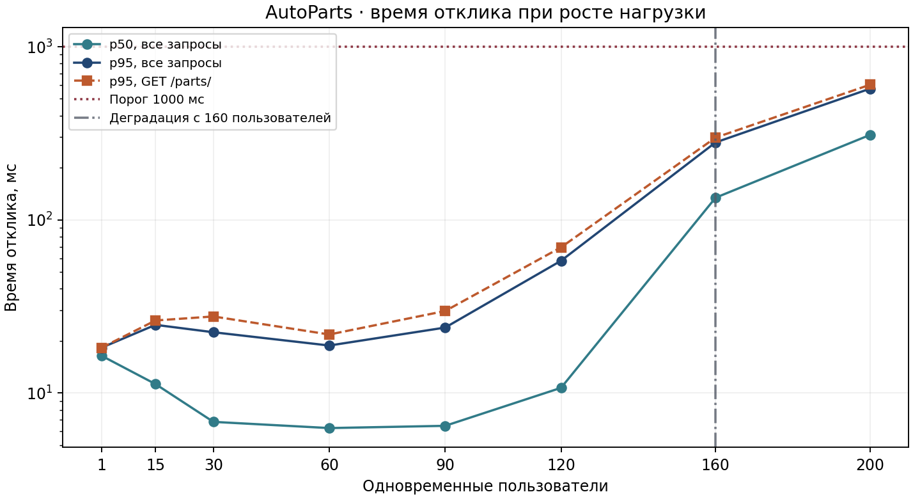

План нагрузочного тестирования
NFR-01 задаёт локальное время ответа каталога до 1 секунды на демоданных. Цели прогона — измерить эталон, проверить этот предел при выбранной ожидаемой нагрузке, найти рост задержки и проверить восстановление после стресса. Восстановление — дополнительный критерий надёжности. Ветки внешних API и оплаты из NFR-03 проверялись отдельно в ЛР3–ЛР4.
Среда — macOS 26.6.2 ARM64, 8 логических CPU, Python 3.14.0, Django 6.0.5, SQLite, Locust 2.47.0 и поточный Django runserver. Генератор и сервер на одной машине, HTTP через 127.0.0.1. Стенд запускается из репозитория с временной БД, заполненной штатными демоданными и синтетической контрольной позицией.
Профиль посетителя
Один виртуальный пользователь выполняет по одному запросу и ждёт случайную паузу от 0,35 до 0,65 с перед следующим действием. Каждый пользователь хранит собственную HTTP-сессию. Доли задают веса выбора, поэтому фактическое распределение немного меняется.
| Действие | Запрос | Вес |
|---|---|---|
| Каталог | GET /parts/ | 45% |
| Поиск и сортировка | GET /parts/?q=QA&sort=price | 25% |
| Карточка контрольной позиции | GET /parts/<id>/ | 20% |
| Просмотр корзины | GET /cart/ | 10% |
Ожидаемая нагрузка — 15 одновременно работающих посетителей. Это учебное допущение для магазина без статистики эксплуатации. Профиль измеряет просмотр: загрузка браузерных ресурсов, внешние сервисы и операции оформления или оплаты в него не входят.
Этапы и критерии
| Этап | Пользователи и окно | Условие |
|---|---|---|
| Базовый | 1 · 18 с | Фиксируем эталон после прогрева. |
| Целевой | 15 · 18 с | Ошибки ≤1%, p95 всех действий ≤1000 мс и каждый GET /parts/ ≤1000 мс. |
| Стресс | 30 → 60 → 90 → 120 → 160 → 200 · 14 с на ступень | Деградация — две соседние ступени с p95 каталога выше max(50 мс, 3 × p95 каталога целевой ступени) либо первая ступень с нарушением целевого критерия. |
| Остановка | Предел 200 или ранний порог | Ранний порог: ошибки ≥10% или p95 всех действий ≥2400 мс. |
| Восстановление | 0 пользователей 8 с, затем 1 · 18 с | Целевой критерий и p95 всех действий ≤ max(30 мс, 2 × базовый p95). |
Новые пользователи добавляются с темпом до 25 в секунду. Прогрев после достижения уровня — 3 с и исключён из результатов. Locust проверяет HTTP 200 и маркер страницы. Сетевые ошибки, таймауты и несовпадение маркера входят в долю ошибок. Гистограмма учитывает завершившиеся в измерительном окне ответы. RPS — количество завершившихся запросов / длительность окна. p95 рассчитан по методу ближайшего ранга.
Фактические результаты
На этапе 15 пользователей зафиксировано 29,05 запроса/с, 0,000% ошибок и p95 24,76 мс. Самый долгий ответ GET /parts/ занял 32,53 мс. Критерии целевой нагрузки PASS.
Деградация впервые подтверждена при 160 пользователях. Граница лежит между последней ступенью 120 и первой выявленной ступенью 160 VU. На этих ступенях p95 каталога вырос с 69,37 до 298,24 мс при пороге деградации 78,72 мс. На максимальной ступени 200 пользователей p95 всех ответов составил 571,37 мс. Пиковый RPS — 245,85 при 160 пользователях, на последней ступени — 234,29 RPS.
Во всех измерительных окнах суммарно 15472 запросов и 0 ошибок. Стресс остановлен, когда достигнут предел профиля в 200 пользователей. После 8 секунд без пользователей p95 с одним пользователем составил 21,84 мс при исходных 18,26 мс. Восстановление PASS.
Отказ приложения не наблюдался. Для этого стенда измерена граница деградации задержки.
| Этап | VU | Окно, с | Запросы | RPS | Ошибки | p50, мс | p95, мс | p99, мс | p95 каталога, мс | max каталога, мс | Порог |
|---|---|---|---|---|---|---|---|---|---|---|---|
| Базовый | 1 | 18,0 | 34 | 1,89 | 0,000% | 16,44 | 18,26 | 18,41 | 18,26 | 18,26 | PASS |
| Целевая нагрузка | 15 | 18,0 | 523 | 29,05 | 0,000% | 11,27 | 24,76 | 30,12 | 26,24 | 32,53 | PASS |
| Стресс | 30 | 14,0 | 818 | 58,42 | 0,000% | 6,82 | 22,44 | 39,96 | 27,68 | 71,95 | PASS |
| Стресс | 60 | 14,0 | 1648 | 117,70 | 0,000% | 6,28 | 18,81 | 37,12 | 21,78 | 62,42 | PASS |
| Стресс | 90 | 14,0 | 2469 | 176,36 | 0,000% | 6,47 | 23,88 | 44,26 | 29,76 | 94,43 | PASS |
| Стресс | 120 | 14,0 | 3223 | 230,22 | 0,000% | 10,72 | 58,03 | 76,87 | 69,37 | 94,22 | PASS |
| Стресс · начало деградации | 160 | 14,0 | 3442 | 245,85 | 0,000% | 134,13 | 279,64 | 312,36 | 298,24 | 337,34 | PASS |
| Стресс | 200 | 14,0 | 3280 | 234,29 | 0,000% | 309,03 | 571,37 | 637,92 | 602,02 | 740,71 | PASS |
| Восстановление | 1 | 18,0 | 35 | 1,94 | 0,000% | 15,18 | 21,84 | 22,42 | 22,42 | 22,42 | PASS |

Действия при целевой нагрузке
| Маршрут | Запросы | RPS | p95, мс | Максимум, мс |
|---|---|---|---|---|
| /parts/ | 252 | 14,00 | 26,24 | 32,53 |
| /parts/<id>/ | 102 | 5,67 | 24,18 | 30,62 |
| /parts/ [search] | 114 | 6,33 | 23,21 | 31,34 |
| /cart/ | 55 | 3,05 | 17,37 | 19,07 |
Предварительный прогон того же профиля показал первую деградировавшую ступень при 120 пользователях и пик 233,21 RPS. Перед итоговым прогоном добавлено явное закрытие соединений Locust при остановке пользователя. Разница между прогонами показывает, что порог зависит от условий и измеряется с шагом профиля.
Предварительный CSV · Итоговый CSV · JSON с разбивкой по маршрутам · График PNG

Предполагаемое узкое место
| Этап | VU | CPU Django, % | CPU Locust, % | RSS Django, МиБ | Потоки Django |
|---|---|---|---|---|---|
| Базовый | 1 | 2,8 | 0,3 | 68,5 | 2 |
| Целевая нагрузка | 15 | 26,0 | 2,3 | 79,0 | 16 |
| Стресс | 30 | 32,2 | 2,2 | 84,9 | 31 |
| Стресс | 60 | 51,2 | 2,8 | 97,2 | 61 |
| Стресс | 90 | 70,3 | 3,8 | 103,5 | 91 |
| Стресс | 120 | 109,9 | 4,6 | 121,9 | 121 |
| Стресс | 160 | 187,4 | 5,4 | 178,1 | 161 |
| Стресс | 200 | 195,1 | 5,7 | 217,3 | 201 |
| Восстановление | 1 | 2,7 | 0,3 | 202,0 | 2 |
На 200 пользователях CPU процесса Django составил 195,1% и CPU генератора — 5,7%. Здесь 100% соответствует одному логическому ядру. Одновременно выросли задержка и число обслуживающих потоков. Плато RPS согласуется с насыщением локального потокового сервера и затратами на обработку запросов и рендеринг шаблонов.
Отдельная серия из 15 одиночных вызовов через Django Test Client показала 4 SQL-запроса на ответ, медиану 2,710 мс на обработку и 0,0 мс по SQL-таймерам SQLite с шагом округления 1 мс. Каталог содержал 11 активных строк, один ответ занимал 32626 байт. План показывает сканирование shop_part, соединения по первичным ключам и временную сортировку:
6 0 216 SCAN shop_part 10 0 45 SEARCH shop_producttype USING INTEGER PRIMARY KEY (rowid=?) 13 0 45 SEARCH shop_manufacturer USING INTEGER PRIMARY KEY (rowid=?) 51 0 0 USE TEMP B-TREE FOR ORDER BY
Сканирование и сортировка могут стать узким местом на большом каталоге. Для текущей выборки измерения сильнее указывают на обработку запроса и потоковый Django runserver. Число соединений и ожидания SQLite под нагрузкой отдельно не профилировались. Полученная граница относится к локальному стенду с SQLite и 11 активными позициями. После снятия нагрузки потоки снизились до 2, а RSS остался 202,0 МиБ. Измерено восстановление отклика.
Статическая проверка
Ruff 0.17.6 проверяет config, shop, manage.py и docs/qa правилами E4, E7, E9 и F. Миграции и артефакты прогонов исключены. Правила охватывают импорты, ошибки Python и неиспользуемые объявления.
| Код | До | Исправление |
|---|---|---|
| E402 | 4 | Запуск Django вынесен в команду стенда. Фикстуры импортируются после инициализации через команду. |
| F401 | 1 | Удалён неиспользуемый импорт timezone в представлениях. |
| F841 | 5 | Убраны неиспользуемые локальные имена в seed_data и в регрессионных тестах. Создание пользователей и товаров сохранено. |
После исправлений Ruff сообщил «All checks passed!». Повторный прогон pytest — 194 passed, 6 xfailed и покрытие 94%.
Матрица трассируемости
Матрица объединяет SRS, тесты ЛР2, системные кейсы ЛР3, Postman, Playwright, проверки защиты и результаты Locust. Отдельно отмечены пробелы покрытия, тесты без связи с SRS и требования с несколькими дефектами.
Воспроизведение
.venv/bin/python -m docs.qa load .venv/bin/python -m docs.qa load --quick .venv/bin/python -m docs.qa lint .venv/bin/python -m docs.qa matrix
Подготовка и команды из корня проекта · Locust API · Настройка Ruff